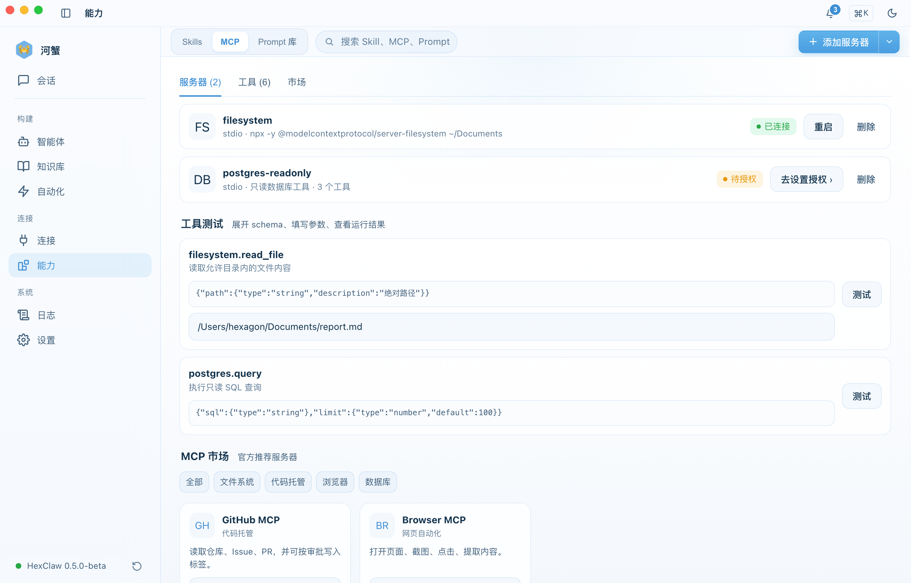
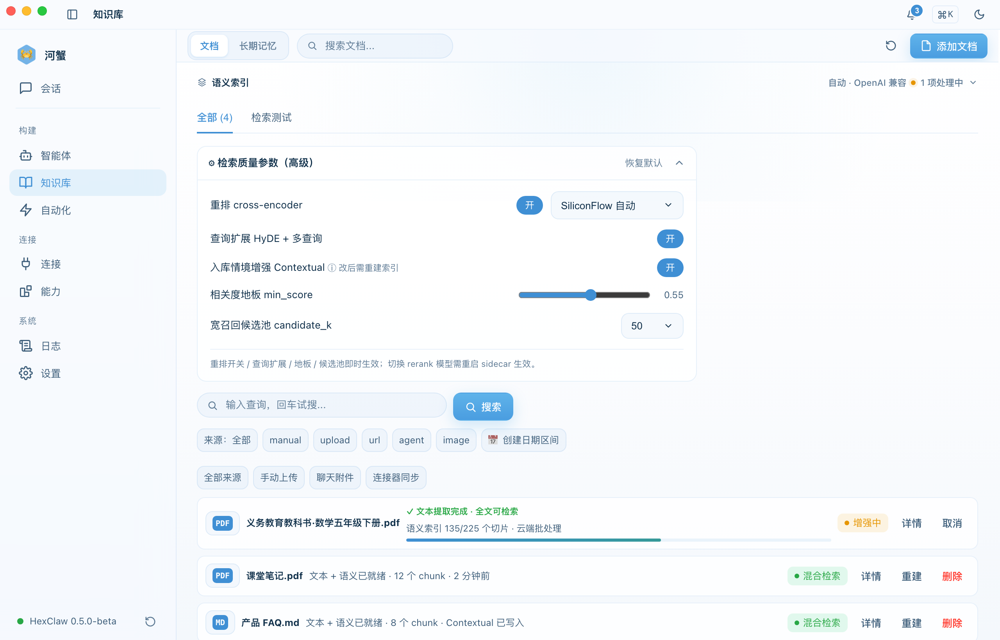
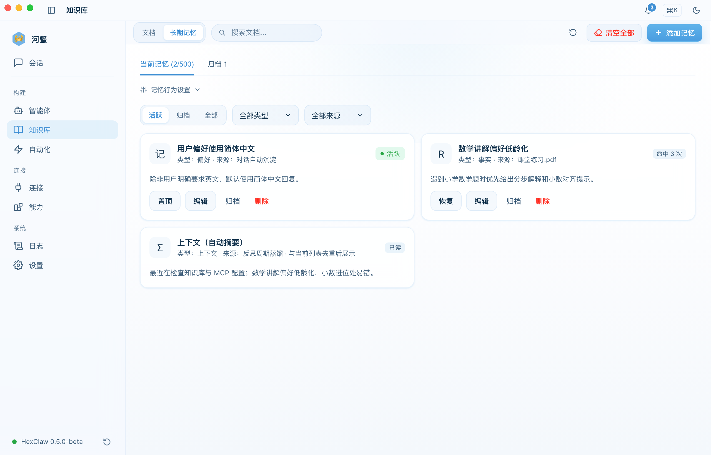
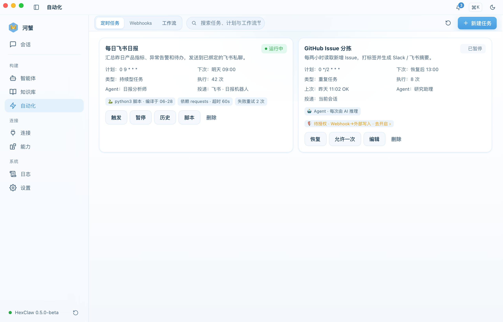
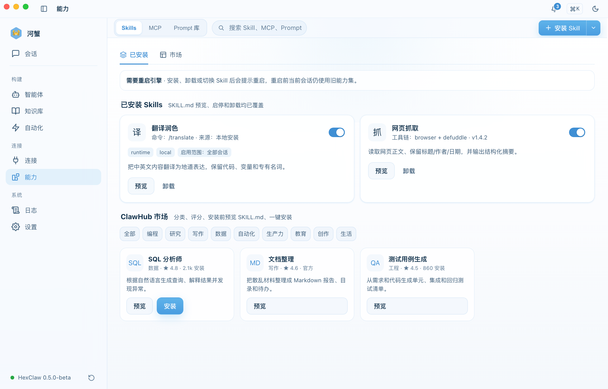
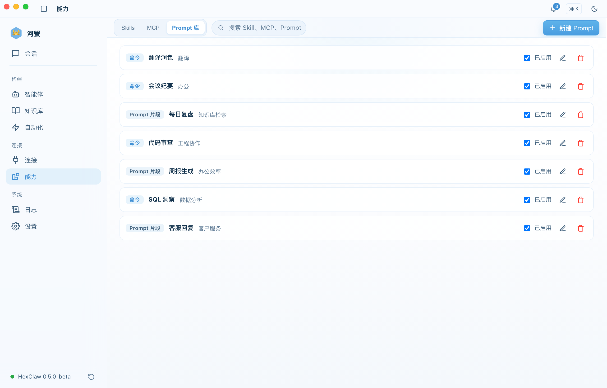
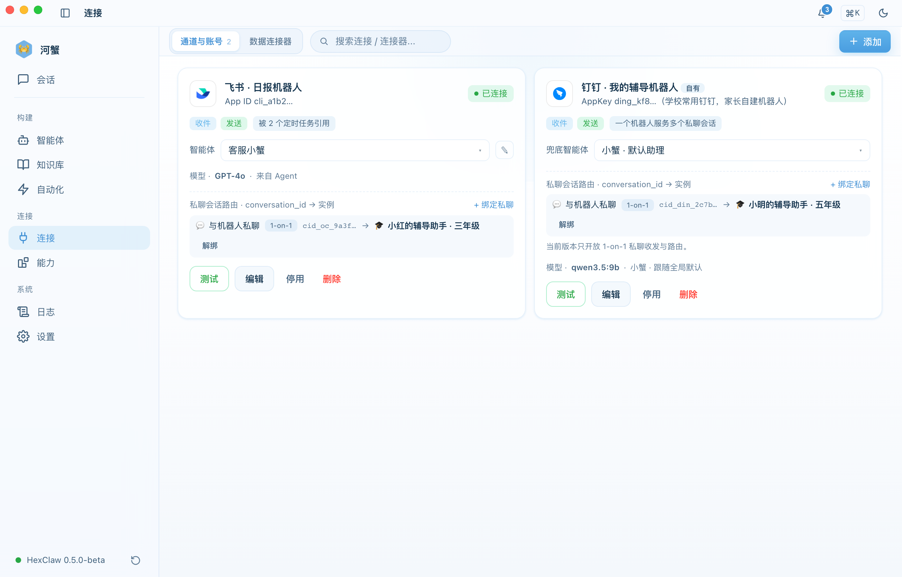
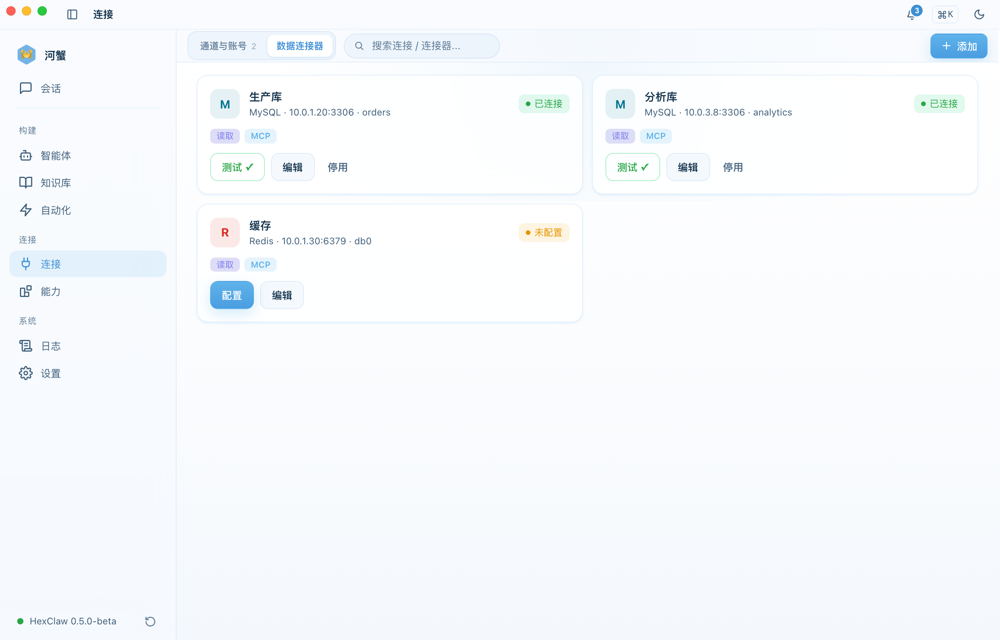
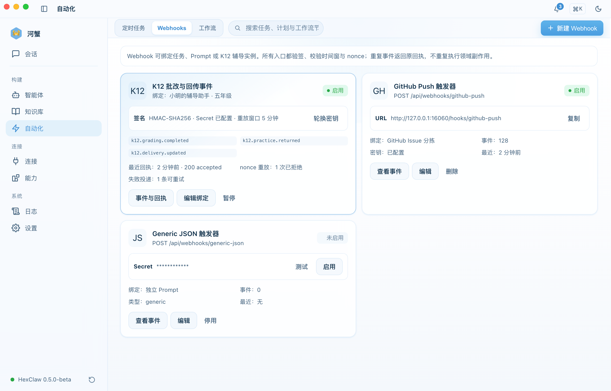
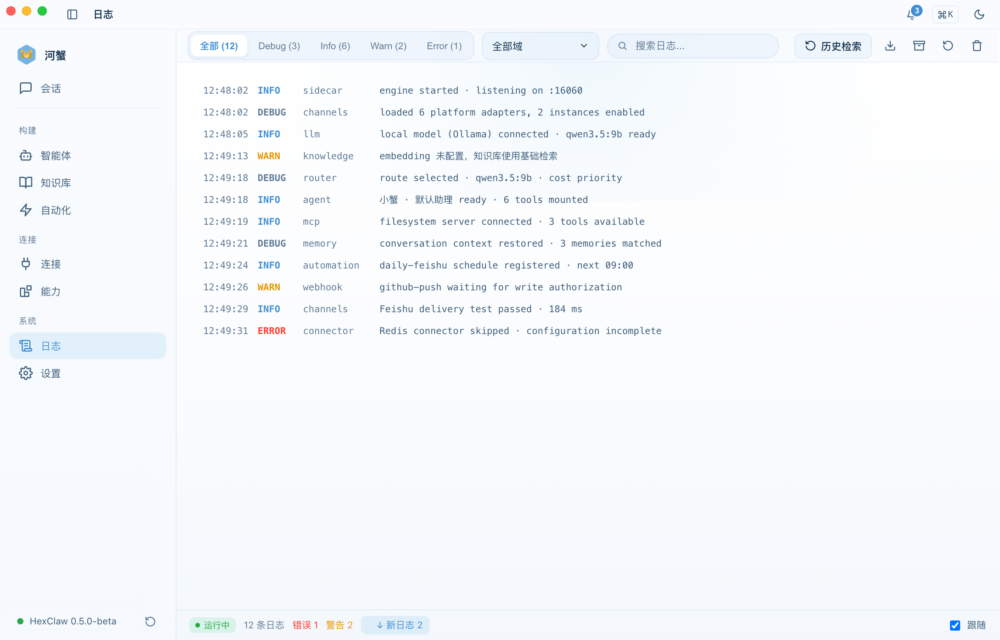

高级功能
MCP、知识库 RAG 与记忆、自动化（定时任务 / Webhook / 工作流）、连接中心与数据连接器、技能、Prompt 库与安全网关。
MCP 协议集成
Model Context Protocol（MCP）让 AI Agent 能调用外部工具和服务。
注册 MCP 服务器
- 进入 能力 → MCP 标签页
- 点击 "添加服务器"
- 填入服务器名称和连接地址
- 选择协议类型：
stdio/sse/streamable_http - 连接后自动发现可用工具
连接成功后，MCP 工具可以分配给 Agent 使用。实时显示连接状态（connected / disconnected / error）。

MCP 服务器配置示例
以下是一个 MCP 服务器的 JSON 配置示例：
{
"mcpServers": {
"filesystem": {
"command": "npx",
"args": ["-y", "@anthropic-ai/mcp-filesystem"],
"env": { "ALLOWED_PATHS": "/Users/me/projects" }
}
}
}知识库（RAG）
上传文档建立私有知识库，AI 回答时自动检索相关内容。
支持格式
- PDF、Markdown、TXT 文件
- 自动分块（chunking）和向量嵌入
- 语义搜索检索
使用流程
- 进入 知识库 页面
- 上传文档 — 支持批量上传
- 等待处理（状态：processing → ready）
- 在对话中，AI 自动检索知识库中的相关内容作为上下文

语义记忆
河蟹 AI 自动从对话中提取并存储记忆，跨会话持久化。
- 自动捕获 — Agent 对话中的关键信息自动保存为记忆
- 语义搜索 — 在 知识库 → 记忆 标签页按关键词或语义检索
- 类型过滤 — 按记忆类型筛选
- 手动管理 — 查看、删除、批量清理

定时任务（Cron）
让 Agent 按计划自动执行任务。
创建定时任务
- 进入 自动化 → 任务 标签页
- 点击 "创建任务"
- 选择执行 Agent、设置 Cron 表达式、填写提示词
- 启用任务
# Cron 表达式示例
0 9 * * * 每天早上 9 点
0 */2 * * * 每 2 小时
0 9 * * 1-5 工作日早上 9 点支持手动触发、执行历史查看、心跳监控。

Skills 与 ClawHub 市场
在 能力 → Skills 中管理本地技能，并从 ClawHub 市场安装新能力：
- 分类：沟通、效率、开发、数据
- 安装：一键安装，按 Agent 启用/禁用
- 评分：社区评分和下载量排序
- 配置：部分技能支持自定义参数

Prompt 库
在 能力 → Prompt 库 中统一管理可复用命令和 Prompt 片段，可随时启停、编辑或删除。

安全网关
在 设置 → 安全 中配置：
| 功能 | 说明 |
|---|---|
| 安全网关 | 启用/禁用安全检查 |
| 提示词注入检测 | 自动检测并拦截恶意提示词 |
| PII 过滤 | 自动过滤个人敏感信息 |
| 内容过滤 | 过滤不当内容 |
| Token 上限 | 单次请求最大 Token 数（256 ~ 128,000） |
| 速率限制 | 每分钟请求数（1 ~ 600 RPM） |
深度思考模式
在聊天页切换到深度思考标签，输入问题后，Agent 会以可见的推理过程进行多源深度分析：
- 检索 — 检索相关资料和来源
- 分析 — 深度分析各个来源的内容
- 综合 — 交叉对比，提炼关键观点并附引用
推理过程实时可见，可折叠 / 展开查看当前阶段。
连接中心 · IM 通道
河蟹 AI 支持连接多种即时通讯平台，让你通过手机消息远程与 AI 对话。进入 连接中心（侧栏「连接」分区）的「通道与账号」配置：
| 平台 | 配置项 | 说明 |
|---|---|---|
| 飞书 | App ID + App Secret | 在飞书开放平台创建企业自建应用 |
| 钉钉 | App Key + App Secret + Robot Code | 在钉钉开放平台创建内部应用 |
| 企业微信 | Corp ID + Agent ID + Secret | 在企业微信管理后台创建自建应用 |
| 微信 | App ID + App Secret + Token | 需要微信服务号 |
| Slack | Bot Token + Signing Secret | 在 Slack API 创建 App |
| Discord | Bot Token | 在 Discord Developer Portal 创建 Bot |
| Telegram | Bot Token | 通过 @BotFather 创建 |
配置保存后需要重启 Engine 生效。每个平台卡片上有"测试连接"按钮可验证配置。

数据连接器（MySQL / Redis 等）
在 连接 页的「数据连接器」中管理数据库与缓存连接：
- 查看连接类型、地址、数据库与当前连接状态
- 通过测试确认连接可用，再交给 MCP 工具只读访问
- 未完成的连接会明确标记为「未配置」，不会混入可用连接

Webhook 触发器
在 自动化 → Webhooks 中创建入站触发器，让外部系统安全地触发任务、Prompt 或智能体实例：
- 签名校验 — HMAC-SHA256 与独立 Secret
- 防重放 — 校验时间窗口与 nonce，重复事件返回原回执
- 事件绑定 — 按触发器绑定任务、Prompt 或智能体
- 事件记录 — 查看最近回执、失败投递与可重试状态

日志与可观测性
日志页集中展示实时运行记录，可按级别、域与关键词筛选，并查看运行状态与告警数量。
